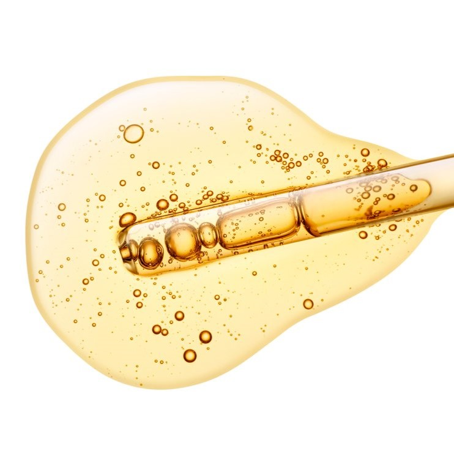
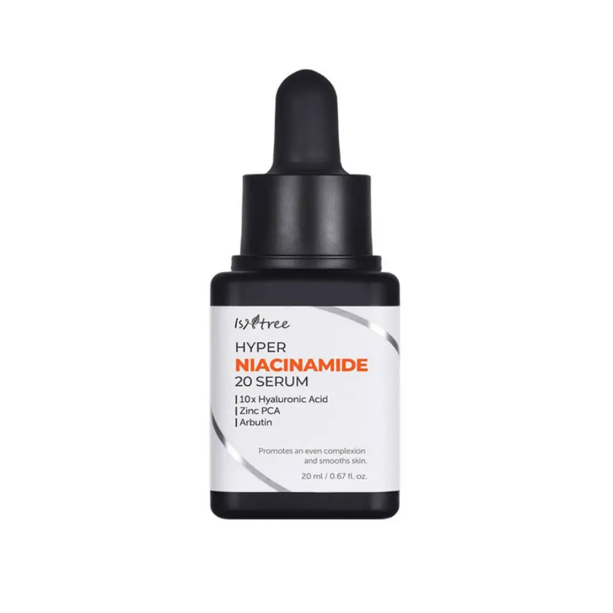
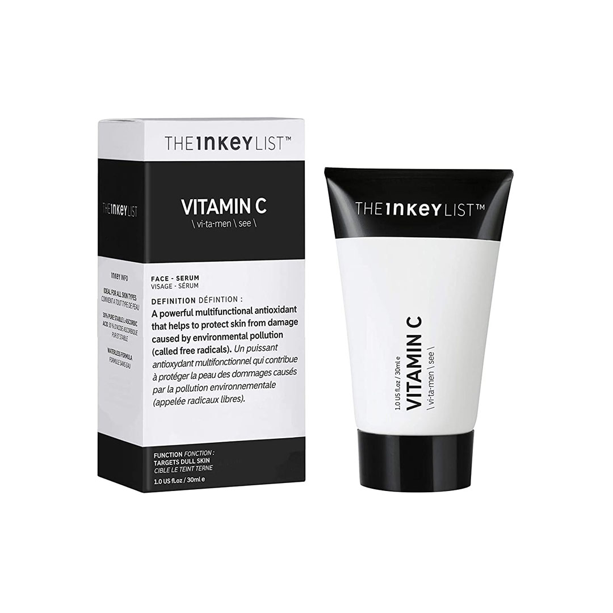

<html></html>

<head></head>
    <title>Vitamin C</title>
    <link rel="stylesheet" href="style.css">
</head>

<header>
    <div id="nav">
        <h1 class="title"><span>G</span>low <span>A</span>ura</h1>

        <div class="navbar">
            <a href="index.html#home"><span class="home"><p>Home</p></span></a>
            <a href="index.html#about"><span class="about"><p>About</p></span></a>
            <a href="index.html#products"><span class="products"><p>Products</p></span></a>

            <div class="searchbutton">
                <form action="about.html" class="searchbar">
                    <button type="submit" class="button" href="about.html">  </button>
                    <input class="search" type="text" placeholder="Search a product">
                </form>
            </div>
        </div>
    </div>
</header>

<body>
    <section id="product">
        <div id="productinfo">
            

            <div class="text">
                <h1>Vitamin C</h1>
                <p>This is an essential water-soluble vitamin important for maintaining a healthy immune system, supporting collagen production, aiding in the absorption of iron, and functioning as an antioxidant. It helps protect cells from oxidative stress and is necessary for wound healing.</p>
                <p>Vitamin C is best used for brightening skin. It improves dark spots, acne scars, and hyperpigmentation. This is because it blocks the process of skin darkening when exposed to UV.</p>
            </div>
        </div>

        <div id="benefits">
            <input type="checkbox" id="trigger">
            <div class="benefittext">
                <label class="btitle" for="trigger">Benefits</label>
                    <div class="benefit">
                        <p>Reduces Redness</p>
                        <p>Brightening</p>
                        <p>Scar Healing</p>
                        <p>Helps with Dark Spots</p>   
                    </div>
            </div>
        </div>

        <div id="recommendations">
            <div class="recoprod">
                
                <a href="https://skinsort.com/products/cosrx/the-vitamin-c-23-serum"><p>The Vitamin C 23 Serum</p></a>
            </div>

            <div class="recoprod">
                
                <a href="https://skinsort.com/products/isntree/hyper-vitamin-c-23-serum"><p>Hyper Vitamin C 23 Serum</p></a>
            </div>

            <div class="recoprod">
                
                <a href="https://skinsort.com/products/the-inkey-list/vitamin-c"><p>Vitamin C Serum</p></a>
            </div>

            <div class="recoprod">
                
                <a href="https://skinsort.com/products/la-roche-posay/10-pure-vitamin-c-serum"><p>10 Percent Pure Vitamin C Serum</p></a>
            </div>
        </div>

        <div id="usageandstorage">
            <div class="container">
                <div class="usage">
                    <h1>Usage</h1>
                    <p>It's widely used in dermatology for reducing pigmentation of hyperpigmented spots on the skin. The best time to apply vitamin C serum is in the morning, after cleansing and toning your complexion, and before moisturizer and SPF. If you want to maximize the perks, and don't have overly sensitive skin, you can apply it in the morning</p>
                </div>

                <div class="storage">
                    <h1>Storage</h1>
                    <p>Vitamin C can lose its potency over time, so make sure to check the expiration date and replace it if it's too old. Keep it in a cool, dry place, ideally at room temperature. Avoid storing it in areas that experience high temperatures, such as near windows, stoves, or heaters. Ensure the bottle or container is sealed tightly after each use. Oxygen can break down vitamin C over time.</p>
                </div>
            </div>
        </div>
    </section>
</body>

<footer>
    <div id="foottxt">
        <div class="contacts">
            <h2>Contact Us</h2>
            <a><p>0912-345-6789</p></a>
            <a><p>glowauraph@gmail.com</p></a>
            <a href="members.html"><p>members</p></a>
        </div>

        <a href="index.html#home"><h1 class="title"><span>G</span>low <span>A</span>ura</h1></a>
    </div>
</footer>

</html>